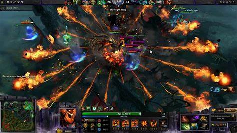
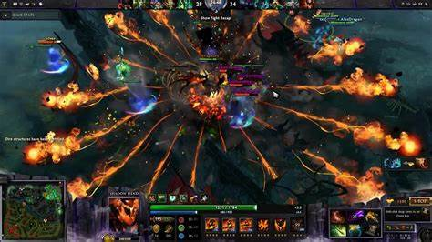

Acerca de Dota 2
Dota 2 es un juego de arena de batalla en línea multijugador (MOBA) desarrollado por Valve Corporation. Su universo se basa en un conflicto épico entre las fuerzas Radiant y Dire, que luchan por el control de un mapa dividido por un río central. Cada jugador controla un héroe con habilidades únicas y se une a un equipo de cinco para destruir la base enemiga, conocida como el Ancient. Aunque el objetivo principal del juego es competitivo, Dota 2 es rico en historia y detalles que profundizan en el trasfondo de sus más de 120 héroes, cada uno con una personalidad y una motivación que los impulsa a participar en esta eterna guerra. El juego también está lleno de referencias y conexiones a su predecesor, el mod de Warcraft III llamado "Defense of the Ancients"..
Dota 2 es un videojuego de estrategia en tiempo real y acción desarrollado por Valve CorporationEl lore de Dota 2 está entretejido con elementos mitológicos y narrativos que crean un universo expansivo y misterioso. Los héroes provienen de diversos mundos, reinos y dimensiones, con historias que van desde tragedias personales hasta épicas cruzadas cósmicas. Por ejemplo, Terrorblade, el demonio rebelde, busca rehacer el mundo a su imagen tras escapar del infierno, mientras que Invoker, el mago inmortal, ha perfeccionado su arte durante milenios. A pesar de sus diferencias, todos los héroes están vinculados por las fuerzas primordiales del Radiant y Dire, representaciones de equilibrio y caos en constante pugna. Este trasfondo da vida a un juego donde cada partida no solo es un enfrentamiento estratégico, sino también una pequeña representación de este vasto y fascinante universo..
- Género: MOBA
- Desarrollador: Valve Corporation
- Plataforma: PC (Steam)
| Año | Torneo | Premio Total |
|---|---|---|
| 2021 | The International 10 | $40,018,195 |
| 2022 | The International 11 | $18,930,775 |
Video del juego:
Galería de imágenes:
 
